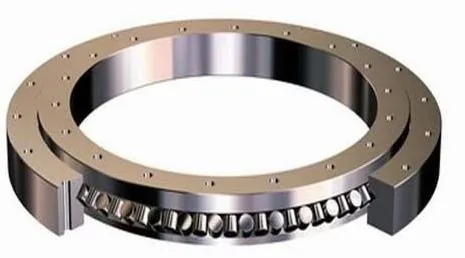

China's Harmonic Drive Suppliers
The reducers whose flexspline bearings Chinese makers are now localizing.
No one sees the bearings, but a humanoid carries ~72 of them and they gate every joint's precision and life. Chinese makers still hold under 15% of global high-end value — Luoyang Hongyuan, Wuzhou Xinchun and LYC are breaking through where it counts.

A humanoid robot is, mechanically speaking, a chain of rotating and sliding joints — and every one of them rides on a bearing. Crossed roller bearings carry the hip and shoulder, thin-wall bearings spin the motor shafts, flexspline bearings flex millions of times inside harmonic drives. Industry estimates put about 72 precision bearings per humanoid at an average unit price near RMB 7,350, a cost base that grows with every sold robot. For decades the high end belonged to SKF, Schaeffler, NSK, THK and IKO. China is now turning the robot joint bearing into a domestic business.
Bearings set the ceiling on a joint's precision, rigidity and life. A humanoid's hip needs a crossed roller bearing that carries axial, radial and moment loads simultaneously in a thin envelope; its harmonic drives need flexspline bearings with walls of only 2-5mm that must survive cyclic deformation of 5-8% of diameter at thousands of rpm — historically a near-monopoly of Japanese harmonic makers. Get the bearing wrong and the joint wears, heats and loses accuracy. That is why bearings, though invisible, are a top-tier procurement priority — and why Chinese OEMs pushed domestic suppliers hard during the 2024-2026 humanoid ramp.
Global high-end bearing value remains dominated by Western and Japanese majors. Swedish SKF has gone as far as forming a joint venture with China's harmonic leader Leaderdrive (绿的谐波) for high-precision transmission components for humanoid joints. Germany's Schaeffler targets a 10%+ share of the humanoid market by 2030 and in August 2026 unveiled a formed strain-wave gearbox that cuts manufacturing cost by over 25% and material use by more than 75%. Chinese bearing makers collectively hold under 15% of global high-end value — but in the robot niche, the balance is already tipping.
| Company | Luoyang Hongyuan (鸿元) | Wuzhou Xinchun (五洲新春) | LYC (洛轴) | C&U / ZWZ |
|---|---|---|---|---|
| Role | ~90% of domestic humanoid joint bearings | Full robot bearing range; into Tesla chain | UBTECH hip joints, aero-grade pedigree | Miniature & impact-resistant specialists |
| 2026 signal | Supplies Unitree, AgiBot, Zhongqing, UBTECH | Flexspline + crossed roller bearings; FAG line acquired | IPO'd on ChiNext (Aug 2026) | C&U micro bearings; ZWZ locked Fourier GR-1 |
| Edge | P2/P4 grades, φ20-2500mm, Luoyang cluster | Bearings + roller screws vertical chain | National-grade R&D, aero engine bearings | Scale + cost from consumer/auto volumes |
Luoyang Hongyuan Bearing (洛阳鸿元, HONB), founded in 2005 in Luoyang, Henan, set out to replace imported high-precision bearings and now supplies roughly 90% of the joint bearings inside domestic Chinese humanoids — Unitree's spring-tumble robots, AgiBot's A2, Zhongqing's humanoids and UBTECH's Walker series all rely on its crossed roller and turntable bearings. Hongyuan makes 12 bearing series at P2/P4/P5 precision across φ20-2500mm, and invested heavily in robot-specific R&D before the boom — a bet that made it the default supplier when China's humanoid wave arrived.
Bearing-and-screw group Wuzhou Xinchun (五洲新春, 603667) built a full robot bearing range — flexspline thin-wall, four-point-contact, angular-contact, needle, tapered and crossed roller types — and, after acquiring a former FAG robot bearing line in Germany, pushed its harmonic-reducer crossed roller bearings into Tesla's Optimus supply chain in 2025, with roughly 126,000 units shipped that year (per industry reports, about 18% of its global humanoid bearing purchases). Its vertical integration — rolling elements + roller screws + reducer bearings — makes it one of the few one-stop robot bearing suppliers.
LYC (洛阳轴承集团) supplies the crossed roller bearings for UBTECH's hip joints and brings national-level R&D from C919/C929 aero-engine bearings to robotics; it listed on ChiNext in August 2026. C&U (人本) dominates miniature and thin-wall bearings at consumer scale. ZWZ (瓦房店) jointly developed impact-resistant four-point-contact bearings with Fourier and won the full-lifecycle supply right for the GR-1 (2025-2028). XQY (新强联) crosses over from wind-turbine bearings, Guangyang (光洋股份) began batch delivery of crossed roller and flexspline bearings to leading humanoid OEMs, and Longxi (龙溪股份) owns the self-lubricating bearing niche — a deep bench forming fast.
Three structural advantages explain the surge. First, the Luoyang cluster: Hongyuan, LYC, XQY and dozens of specialists sit in one city with shared grinding, heat-treatment and testing infrastructure. Second, reducer co-localization: as Leaderdrive, Zhongda Leader and other Chinese reducer makers scaled, their bearing demand pulled domestic suppliers into the loop — and now the reducers and their bearings are made in the same country, often the same city. Third, attractive economics: humanoid-grade bearings carry gross margins of 28-50%, enough to fund the precision-investment loop that was once the West's moat.
Industry estimates put about 72 precision bearings per humanoid at an average unit price near RMB 7,350 — spanning crossed roller, thin-wall, flexspline and four-point-contact types across every joint.
Luoyang Hongyuan (HONB) supplies roughly 90% of the joint bearings inside domestic Chinese humanoids — including Unitree, AgiBot, Zhongqing and UBTECH — from its base in Luoyang, Henan.
A flexspline bearing is the ultra-thin bearing inside a harmonic drive's flexspline. Its wall is only 2-5mm and it must survive cyclic deformation of 5-8% of diameter at high speed — historically a near-monopoly of Japanese harmonic makers.
Chinese makers still hold under 15% of global high-end bearing value, but have broken through in robotics: Luoyang Hongyuan covers ~90% of domestic humanoid joint bearings, Wuzhou Xinchun entered Tesla's Optimus chain, and LYC locked UBTECH's hip joints. SKF and Schaeffler are responding with China joint ventures and new forming processes.
The reducers whose flexspline bearings Chinese makers are now localizing.
The linear joints of a humanoid, driven by the same domestic supply chain.
The bearing-and-screw group now inside Tesla's Optimus chain.
The pillar guide — who leads every component in 2026.
Company profiles, product pages and supplier analysis for China's robotics ecosystem.